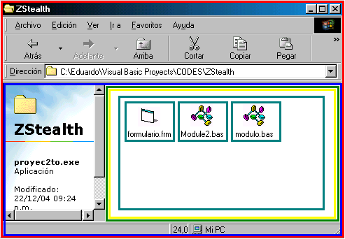
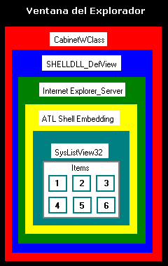

----------------------------------------------------
¦
Nuevas Tecnicas Stealth
¦
----------------------------------------------------
El comienzo...
Un dia, mientras hacia mis clasicos rituales umbanda, decido sacrificar una marsopia indonesa en honor a Exú. Luego me despierto y me veo reflejado en el monitor. jeje, muchas horas haciendo nada me hicieron preguntar muchas cosas estupidas como: "¿que es lo primero que hace un usuario experto cuando se da cuenta de que esta infectado con un virus?"; ahi es cuando me doy cuenta de que soy uno de esos usuarios, entonces es cuando anoto todo los pasos que sigo para darme cuenta de si estoy o no infectado. Logicamente y dependiendo de la situacion, la mayoria hace lo siguiente:
Ejecuta un mataprocesos
Ejecuta el msconfig
Ejecuta el regedit
Si hay entradas dudosas en el registro, busca el origen de esas entradas.
En el caso de que desconfie de si mismo:
Actualiza su antivirus
Entonces abro mi mataprocesos. En win98 ese mataprocesos es una burla, porque es
muy facil no aparecer en la lista. Pero... en WinXP existe el famoso
Taskmanager, que muestra todos los procesos aunque estos sean servicios. Si
existiera algun programa de origen dudoso seguramente este programa aparecerá
en el tskmngr.
Abro el msconfig. Si abre es porque seguramente no estoy infectado porque la mayoria de los virus borra este programa. Luego me fijo en la ficha "Inicio" alguna entrada sospechosa.
Abro el regedit. Igual que el msconfig. En el caso de que haya un ejecutable sospechoso en las entradas del reg, abro el explorador, busco la ruta y borro el ejecutable. Luego borro la entrada del registro.
El mataprocesos, el msconfig, el regedit y el explorador son ventanas. Esas ventanas tienen controles para interactuar con el usuario. Esos controles tienen diferentes fines y usos.
El mataprocesos usa un control para mostrar la lista de programas que se estan ejecutando. El msconfig usa un control para mostrar la lista de programas que se ejecutan en el inicio del sistema. El regedit usa un control para mostrar las claves de cada llave del registro. Cual es ese control? El maravilloso SysListView32. Ese control, en adelante SLV32, no es mas que un listbox un poco mas elaborado. Ese listbox tiene items. Los items pueden agregarse y borrarse. borrarse.
BORRARSE. y no necesariamente internamente. Gracias a la API SendMessage de Win2 podemos hacer lo que se nos plazca con ese control. Mi idea es la siguiente:
Buscar todas las ventanas que contengan el SLV32. Ir item por item buscando alguno que coincida con nuestro nombre del exe. Si hay alguno, lo borramos. de esta manera no borramos la entrada del registro sino el item que muestra esa entrada del registro. pero solo lo haremos cuando el virus este en ejecucion y la ventana
este abierta.
Una cosa mas: cuando abrimos una carpeta del disco, el explorador nos muestra todos los archivos (que novedad) y cada archivo tiene un icono. Porque digo esto? porque el explorador usa el SLV32 para mostrar los
archivos. Lo que significa que podemos borrar ese item sin borrar el archivo. De esta manera el archivo existira pero no podra ser visto mientras el virus este en ejecucion.
Antes de empezar con esta tecnica es obligatorio tener conocimientos sobre ciertos terminos, asi que pasare a explicar brevemente sobre los handles y las ventanas.
No será la mejor explicacion sobre handles que puedan encontrar, asi que les
recomiendo buscar mas info en el google.
Handles, Classes, y ventanas.
Todas las ventanas de windows tienen identificadores numericos (handles), que sirven para
diferenciar una ventana de otra. Cada identificador o handle es unico y dinamico. Significa que windows asigna un nuevo handle a cada ventana en el momento de abrirla. Mientras este abierta windows no cambia el handle. Gracias a este identificador podemos enviar comandos a una ventana especifica, si sabemos el handle de la misma.
No solo las ventanas tienen estos identificadores, sino tambien todos los controles que las ventanas utilicen.
Entonces... Como identificar un control si ese handle es dinamico? Cada control
pertenece a una classe. Las ventanas tambien son classes. Las classes no son dinamicas y es asi como distinguimos un control de otro, porque tienen distintas
classes. Una classe puede ser un textbox, en cuyo caso la classe se llamará
Edit, o puede ser un boton, y entonces la classe será button.
En una ventana todos los controles estan anidados dentro de una clase padre. El siguiente grafico muestra rudimentariamente una ventana con las clases padres e hijas. Para saber el handle del control SysListView32 hay que saber los handles de todas las clases padres (ATL SHELL Embedding, Internet Explorer_Server, etc)

Como verán, solo he remarcado ciertas partes de la ventana, porque son las que
en este articulo usaremos para nuestro beneficio. Una ventana puede tener muchas
mas classes de las que realmente se muestran.
NOTA: ADJUNTO A ESTA E-ZINE SE ENCUENTRA UN PROGRAMA LLAMADO ParentClasses.exe, EL CUAL MUESTRA EL NOMBRE DE LAS CLASSES DE AQUELLAS VENTANAS QUE ESTEN DEBAJO DEL MOUSE. ADEMAS EL PROGRAMA TE DETALLARA LAS CLASSES PADRES POR ORDEN DE FAMILIA.
Si quieren mas informacion acerca de los handles y las ventanas sugiero el MSDN de microsoft.
Enviando Comandos al SysListView32.
Cuando hacemos un click a un boton estamos enviando un comando a ese boton. Cuando maximizamos o minimizamos una ventana estamos enviando un comando a esa ventana. Ese comando es un "numero" que windows identifica como accion. Gracias a la API de windows llamada SendMessage, podremos enviar comandos a todas las ventanas y todos los controles que queramos. A esta API obligatoriamente hay que pasarle como parametro el handle
del control o la ventana, y la accion o el comando que querramos realizar. La sintaxis es la siguiente:
SendMessage (hwnd, wMsg, wParam, lParam
)
hwnd = es el handle de la ventana a la que le enviaremos el mensaje.
(LONG)
wMsg = es el mensaje. Depende de la accion que querramos ejecutar, las constantes que debemos usar son diferentes. en el MSDN hay mucha informacion sobre esto.
(LONG)
wParam = dependiendo del mensaje se debe o no usar este parametro. (LONG)
lParam = dependiendo del mensaje se debe o no usar este parametro. (ANY)
MENSAJES:
En el caso del SLV32, los mensajes parten de la base de la siguiente constante:
Const LVM_FIRST = &H1000
---------------------------------------------------------------------------------------------------------
asi, para recibir el total de items se debe usar la siguiente constante:
Const LVM_GETTITEMCOUNT = (LVM_FIRST + 4)
y asi se llama a la funcion:
x = SendMessage(hwnd, LVM_GETTITEMCOUNT, 0, 0)
---------------------------------------------------------------------------------------------------------
para eliminar un item:
Const LVM_DELETEITEM = (LVM_FIRST + 8)
Call SendMessage(hwnd, LVM_DELETEITEM, inDeX, 0)
en este caso inDeX es el numero de item a borrar.
---------------------------------------------------------------------------------------------------------
Para saber el texto de cada item:
Private Const LVM_GETITEMTEXTA As Long = (LVM_FIRST + 45)
Call SendMessage(hwnd, LVM_GETITEMTEXTA,
inDex, ByVal lpSysShared)
En esto es en donde da problemas, porque Window$ provoca un fallo valla a saber
por que. lpSysShared es una variable del tipo LV_ITEM, pero no podemos pasarla
directamente, antes hay q usar las Apis para escribir en memoria los valores y
luego recien podemos recibir los datos. No encontre nada de informacion sobre el
por que del fallo. se las debo xD
Menos palabras y mas acción.
En este ejemplo mostraré como "eliminar archivos de una carpeta", "eliminar entradas del registro", y
"a que no puedes matar mi proceso".
El codigo de ejemplo se encuentra adjunto a este articulo y no sera publicado con esta explicacion por considerarlo demasiado "grande". Aqui explicare lo que hace el codigo para que cualquiera pueda adaptarlo al lenguaje que mas le guste.
Primero necesitaremos un Timer que busque las ventanas del explorador, del msconfig y del regedit.
Usando la API FindWindowsEx
---------------------------------
Con la api FindWindowEx buscamos la subclase o la clase hija dentro de una clase
padre. Debemos pasarle los siguientes parametros:
FindWindowEx (hWndParent,
hWndChildAfter, lpClassName, lpWindowName)
hWndParent = Handle de la ventana principal. (LONG)
hWndChildAfter = Handle del siguiente control hijo.
Ver Explicacion Detallada mas abajo. (LONG)
lpClassName = Nombre de la clase que estamos
buscando. (STRING)
lpWindowName = Nombre de la ventana que corresponde con la clase que estamos
buscando. (STRING)
Explicacion detallada sobre el hWndChildAfter:
supongamos que en una ventana tenemos dos cajas de texto. Para saber el handle
de la primer caja de texto, simplemente llamamos a la Api de la siguiente
manera:
x = handleDeLaVentanaPrincipal
a1 = FindWindowEx (x, 0, "Edit",
"")
Pero... si queremos obtener el handle de la segunda caja de texto, como segundo
parametro debemos pasarle el handle de la primera caja de texto. En este caso a1
es el handle del 1er textbox.
a2 = FindWindowEx (x, a1, "Edit",
"")
asi, si tenemos 8 cajas de texto y queremos saber el handle de la última,
debemos primero ir por las anteriores.
---------------------------------------------------------------------------------------------------------
Searching... Explorer.
-----------------------
La clase de la ventana se llama "CabinetWClass". esta a su vez tiene la ventana hija con la clase "SHELLDLL_DefView", que tiene a su vez una hija llamada "Internet Explorer_Server", que tiene una hija llamada "ATL Shell Embedding", que es padre de nuestro querido "SysListView32".
Osea:
en WIN 95/98/ME
x = CabinetWClass_hWnd
i = FindWindowEx(x, 0, "SHELLDLL_DefView", "")
i = FindWindowEx(i, 0, "Internet Explorer_Server", "")
i = FindWindowEx(i, 0, "ATL Shell Embedding", "")
i = FindWindowEx(i, 0, "SysListView32", "")
en WIN NT/XP
x = CabinetWClass_hWnd
i = FindWindowEx(x, 0, "SHELLDLL_DefView", "")
i = FindWindowEx(i, 0, "DUIViewWndClassName", "")
i = FindWindowEx(i, 0, "DirectUIHWND", "")
i = FindWindowEx(i, 0, "CtrlNotifySink", "")
i = FindWindowEx(i, 0, "SysListView32", "")
Searching... Regedit.
----------------------
La clase de la ventana se llama "Regedit_Regedit".
x = Regedit_Regedit_hWnd
i = FindWindowEx(x, 0, "SysListView32", "")
Searching... MsConfig & TaskMngr.
------------------------------------
La clase de la ventana se llama "#32770". La ventana contiene una
subclase que tambien se llama "#32770".
x = x_32770
i = FindWindowEx(x, 0, "#32770", "")
i = FindWindowEx(i, 0, "SysListView32", "")
Mandando el handle sagrado.
Cuando ya tenemos el handle del SLV32, le mandamos un mensaje para que nos devuelva el total de items.
hLV corresponde al hwnd del SysListView32
nCount = SendMessage(hLV, LVM_GETTITEMCOUNT, 0, 0)
Hacemos un bucle para que recorra desde el primer item hasta el ultimo. En cada item mandamos un msg para que nos devuelva el
texto de ese item, asi podremos compararlo con nuestro nombre.
For ind = 0 to nCount
Call SendMessage(hLV, LVM_GETITEMTEXTA, ind, ByVal lpSysShared)
Next
Hacemos un IF para saber si ese item tiene nuestro nombre, y si es asi le mandamos el mensaje para que elimine el item. hay que pasarle como parametro el index del item. osea el numero del item (si es el primero sera el 0, el segundo sera el 1, y asi sucesivamente.)
Call SendMessage(hLV, LVM_DELETEITEM, ind, 0)
Y eso es todo. ahora, unas recomendaciones:
En la transicion de la eliminacion del archivo, el item aparece y luego se elimina, por lo
que, un usuario con un ojo atento se daria cuenta de esto. Una solucion seria
ponerle al programa un nombre que empieze con "Z". De esta manera, por
el orden alfabetico el item aparecera a lo ultimo de la lista y esa transicion
no sera vista.
Cuando el item se borra en el mataprocesos, vuelve a aparecer, y luego se borra
de nuevo, y asi sucesivamente. El mataprocesos tiene un timer que actualiza la
lista, y este timer es mas rapido que el de vb, asi que aun no he encontrado la
solucion para esto. Lo unico que se me ocurre es que en vez de borrar el item,
esperemos a que el usuario lo seleccione primero. Asi, cuando lo tilde le
enviamos el msg y lo eliminamos, y el usuario no podra cerrarlo. Pero se dara
cuenta igual, cuando se elimine, asi que aun estoy trabajando en ello.
Bueno, ahora si, la despedida.
Agradecimientos.
Gracias a todos los miembros de
Gedzac actuales (29-1-2005), especialmente a Byt3Cr0w
a Falckon (Wake Up!)
a mi AMD K6, y a mi Pentium 133
gracias a todos los que confiaron en mi, menos a AIBI, que no paro de distraerme
y me enamoro, causa suficiente para que este articulo tardara mas de un mes en
escribirse. Sin vos estoy perdido!